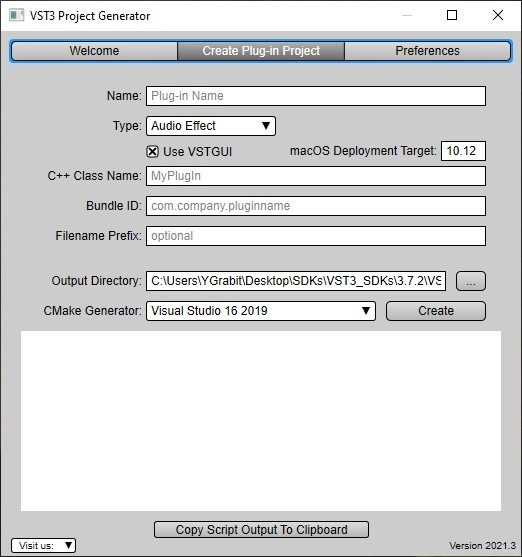

/ VST Home
What is the VST 3 SDK?
On this page:
- VST 3 SDK explained
- What is included
- AAX, AUv3, AU and VST 2 wrappers
- VST 3 Plug-ins Examples
- VST 3 Plug-in Test Host
- Validator command line
- AudioHost
- EditorHost
- VST 3 Inspector
- VSTGUI
- VST 3 Project Generator
- iOS Inter-App Audio support
- VST 3 Licensing
- System requirements
- Download link
- Change history
VST 3 SDK explained
The VST 3 SDK (Virtual Studio Technology Software Development Kit) is a collection of software development tools included in one package. This allows plug-in developers to create plug-ins in VST 3 format and host developers to load VST 3 plug-ins into a DAW or audio editor.
What is included
The VST 3 SDK package contains:
The VST 3 API
This is a C++ interface defining how a VST 3 plug-in communicates with a host and vice versa. The heart of VST 3.Check the folder "pluginterfaces/vst" of the SDK!
VST 3 Implementation Helper Classes
Some helper classes are provided, implementing some VST 3 interfaces for hosting and for creating VST 3 plug-ins. Simply derived your plug-in C++ classes from these helper classes.
Check the folder "public.sdk" of the SDK!

AAX, AUv3, AU and VST 2 wrappers
These wrappers allows you to create versions of your VST 3 plug-in in other plug-in formats with minimum effort:
Check the folder "public.sdk/source/vst/aaxwrapper" of the SDK!
VST 3 Plug-ins Examples
The SDK includes some Plug-ins implementation examples. The Legendary AGain and ADelay, thanks Paul Kellet the Open-source mda Plug-ins, a basic "Note Expression Synth" supporting "Note Expression Event", an example of pitchnames support Plug-in, a VST 3 Host Checker which checks if a host is VST 3 compliant and more...


Check the folder "public.sdk/samples/vst" of the SDK!
VST 3 Plug-in Test Host
The SDK provides a test application called VST3PluginTestHost for Apple Mac OS X (i386/x86_64) and Microsoft Windows (32bits, 64bits).
This application allows you to load a plug-in, simulates some inputs (Audio and Event) and acts like a small VST 3 host application based on an ASIO driver.
Included in this application is a test module which allows you to check your plug-in in regard to the VST 3 standard.

Check the folder "bin" of the SDK!
Validator command line
as Cross-platform source code
The validator is a small command line host application (source code included) which can be used to check your > plug-in for VST 3 conformity. You can also write your own test code and let the validator execute it. Very nice for > automatic build server integration.Check the folder "public.sdk/samples/vst-hosting/validator" of the SDK!
AudioHost
as Cross-platform source code
Simple cross-platform (only tested on Linux) host application allowing you to register a VST 3 plug-in with Jack Server. First, you have to download the Jack Audio SDK and application server (http://www.jackaudio.org).
- Windows (not tested): audiohost.exe "C:\PATH_TO_PLUGIN"
- macOS (not tested)
- Linux: audiohost PATH_TO_PLUGIN
On Windows and macOS, you can also drag and drop a VST 3 plug-in on the executable via Explorer/Finder.
Check the folder "public.sdk/samples/vst-hosting/audiohost" of the SDK!
EditorHost
as Cross-platform source code
Simple cross-platform (Win/macOS/Linux) host application allowing you to open the editor of a VST 3 plug-in (with HiDPI > support on Windows/macOS). Call it from the command line: Windows: editorhost.exe "C:\PATH_TO_PLUGIN" macOS/Linux: > editorhost PATH_TO_PLUGINOn Windows and macOS you can also drag and drop a VST 3 plug-in on the executable via Explorer/Finder.
Check the folder "public.sdk/samples/vst-hosting/editorhost" of the SDK!
VST 3 Inspector
as Cross-platform source code
Simple cross-platform (Win/macOS/Linux) host application, built with VSTGUI, which scans the VST 3 Folder, collects > information from the factory about each VST 3 plug-in and display it in its UI.
Check the folder "public.sdk/samples/vst-hosting/inspectorapp" of the SDK!

VSTGUI
This is a user interface toolkit mainly for audio plug-ins (VST, AudioUnit, etc). Based on the XML definition of the plug-in UI, VSTGUI includes an embedded editor (UIDescription Editor) which allows the developer to create a plug-in UI just by drag & drop of the UI element.
First developed in-house by Steinberg Media Technologies (around 1998) for their first VST plug-ins. Later added as binary libraries to the official VST SDK. Since May 2003, VSTGUI is open source, and is hosted now at GitHub https://github.com/steinbergmedia/vstgui.
The last official release version of VSTGUI is always included in the VST 3 SDK.

Example of the VSTGUI UIDescription Editor (embedded editing WYSIWYG)
Check the folder "vstgui4" of the SDK!
VST 3 Project Generator
This open source application (Win/macOS) allows you to generate easily a new VST 3 plug-in project by just entering in a GUI some parameters.

Check the folder "VST3_Project_Generator" of the SDK!
The source code is available at GitHub - steinbergmedia/vst3projectgenerator: VST 3 Project Generator.
iOS Inter-App Audio support
iOS InterApp-Audio application out of your VST 3 plug-in
VST 3 Licensing
Steinberg VST 3 Plug-In SDK Licensing Agreement
Please sign this License Agreement if you want to develop, release or host VST 3 plug-Ins.
System requirements
| Operating System | Architecture | Compiler | Notes |
|---|---|---|---|
| Windows 10 | x86, x86_64 | MSVC 2019, MSVC 2017 | |
| Windows 8.1 | x86, x86_64 | MSVC 2019, MSVC 2017 | |
| macOS 10.13, 10.14, 10.15, 11.0 | x86, x86_64, Apple Silicon | Xcode 7, 8, 9, 10, 11, 12.2 | |
| iOS 13, iOS 14 | arm64 | Xcode 11, 12.2 | |
| Linux - Raspberry Pi OS (Buster) | arm32 | GCC 8.3 and higher | Visual Studio Code |
| Linux - Ubuntu 18.04 LTS | x86, x86_64 | GCC 8.3 and higher | Visual Studio Code, Qt Creator |
| Linux - Ubuntu 20.04 LTS | x86, x86_64 | GCC 8.3 and higher | Visual Studio Code, Qt Creator |
Download link
Important links you will need for working with VST 3
Change history
All released versions of the VST 3 SDK with changes and dates.